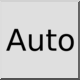

Auto
Verktøylinje/ikon:


Meny: Snap > Auto
Snarvei: S, A
Kommandoer: snapauto | sa
Verktøylinje/ikon:


Autofesteverktøyet fester til det nærmeste skjæringspunktet, endepunktet, midtpunktet, normalpunktet, referansepunktet, rutenettpunktet eller punktet på et objekt, i den prioriteringsrekkefølgen. Typene referansepunkter som autofesteverktøyet fester til, kan konfigureres under Rediger > Programinnstillinger > Fest > Autofeste.